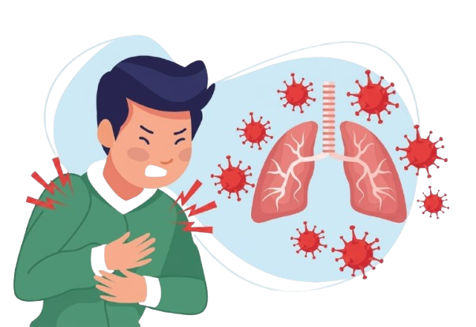
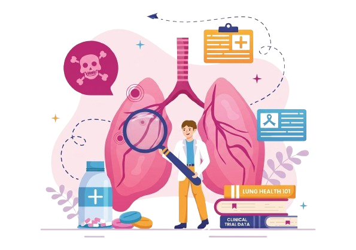

Monitoramento em Tempo Real da Nossa Conexão com o Ar
Descubra o estado do ar que você respira na sua cidade. Monitore e aprenda como a poluição afeta sua saúde.

Descubra o estado do ar que você respira na sua cidade. Monitore e aprenda como a poluição afeta sua saúde.
Entenda como o sistema respiratório funciona e os efeitos dos poluentes.
Saiba Mais >Poluentes monitorados pela CETESB: PTS, MP10, MP2,5, Fumaça, SO2, CO, NO2, O3.
Saiba Mais >
Acesse informações oficiais de saúde e dados regionais detalhados.

Em breve: Dados históricos de poluição.

Em breve: Mapas de outras regiões do estado.

Se pudéssemos esticar toda a superfície interna dos seus pulmões (os alvéolos), ela cobriria uma quadra de tênis inteira (cerca de 75 m²).